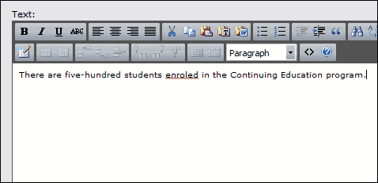

Using the Spell Checker
The rich text editor includes a spell checker that underlines words that are not in its dictionary.

To see suggestions of correct spellings, or to add a word to the system's spell checker dictionary, click the underlined word. A drop menu opens:

The menu gives you the following options:
- In the upper section of the menu, select one of the bold words to replace the underlined word. The spell checker suggests up to five alternate words.
- Click Ignore All to stop checking the word in this instance of the rich text editor.
- Click Add to Dictionary to add the underlined word to the rich text editor system dictionary. When you add the word to the system dictionary, you make it valid for all users of the rich text editor in your system.
Back